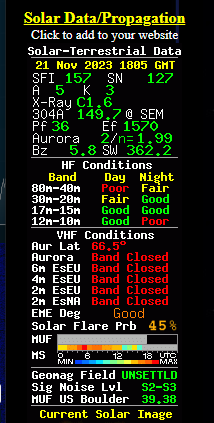

[Date Prev][Date Next][Thread Prev][Thread Next][Date Index][Thread Index]
Re: [NCDXC Chat] Propagation Predictions - my take
- To: NCDXC Chat <chat@ncdxc.org>
- Subject: Re: [NCDXC Chat] Propagation Predictions - my take
- From: David Grybos <david@grybos.com>
- Date: Tue, 21 Nov 2023 14:39:46 -0800
- Arc-authentication-results: i=1;
- Arc-message-signature: i=1; a=rsa-sha256; d=oxsus-vadesecure.net; s=arc-202309-rsa2048; t=1700606398; c=relaxed/relaxed; h=from:reply-to:subject:date:to:cc:resent-date:resent-from:resent-to:resent-cc:in-reply-to:references:list-id:list-help:list-unsubscribe:list-subscribe:list-post:list-owner:list-archive; bh=26QXhnVn+zwfBgthOn+qJq+qiqdg1CvRUrGD6C5yVC4=; b=IQnP3XvP2MBVFEAxsqCx5XvYrc+SjH7e6cZbghy0vCKuPBhOI3V14nV9mrhtzLoVVMMPAQKmE33CCwx+aIgRPNUSyQCQW3G7MJ+8iIesgIQs2KnwHQjOJpcTaQwGVXhFBaGc0slPFx5lxgE58tAxlP3/IOzyS8nRF1cbkdHr2lWGAawv+YXCf3m62ph7/GyyTJk0dTk+xEsZyiAOYCAyABuS5iD6J/H7vy3oTzvcJX854zGsmnttP4tmANPTPD9zx03IkuKuiNy/CUPZFrKYxLlHyAacjCjDaXzSY0K4yYecBSutcDUWv79b+wOGLTHy+D/UmTF4k889UQUBcdjOtg==
- Arc-seal: i=1; a=rsa-sha256; d=oxsus-vadesecure.net; s=arc-202309-rsa2048; t=1700606398; cv=none; b=F96/PWxRlHmoz74gPyHgMJoKVDi4n/bQ4mK4qEQlSpGcGSSpNqHZBDu3tyvf0OMZhHzDrCFuIFFyvv6vt3e1RiWrr2AG5pigY+0+U5yM+9AUPZOUo2y0iRzHCl+eMqIeIFGlL5hetwjJOsLuJIm30dSWS0Z4D2ZoEJuOene52ldPW+5fAV77yxXX8BdmE+1AFl/3cMOr95i7QPwK4ZdN4KPy9fUxtBLrjiloRbTmJn4j9MhKnrvu3SJHvTJQSCZyLRpx0atPj9EliGcgi3dhFylxl+aA5xmF2M1yrAqHba2GzdP/SHkiA8+QATVL1A/eczLEP895yBxBeUrP5FyAjg==
- Authentication-results: oxsus-vadesecure.net; auth=pass smtp.auth=3@101048 smtp.mailfrom=david@grybos.com;
- Dkim-signature: v=1; a=rsa-sha256; bh=26QXhnVn+zwfBgthOn+qJq+qiqdg1CvRUrGD6C 5yVC4=; c=relaxed/relaxed; d=webcom.xion.oxcs.net; h=from:reply-to: subject:date:to:cc:resent-date:resent-from:resent-to:resent-cc: in-reply-to:references:list-id:list-help:list-unsubscribe: list-subscribe:list-post:list-owner:list-archive; q=dns/txt; s=mail1; t=1700606398; x=1701211198; b=N12L+qIFGQVUbmZ6VLX9LFb1G52wF2CLHvOfK7QXw TQlhWdOPlbyeLvhiC3JJNhKaSGlOiZST0v7vh4b14RY2CGUklcVvtzmIhbZW774PhhU0uOr zJFNGwVimDv3u0blK3esq9TD4HECritK+LxVlMu+eOGV6DpChApzRKOo4/f0TZWufsSBDUG xPbYkUlo1uDKyCR1yXGv0PDwD0P/EwyX+Fe7Xt0YyxFOGYBZSzHxO/YwXGh/wi3sfhmFLYJ RUXSwggoM9bGA7AGmOIKXY+n7GrVNVjysohp57Uoe68BXiEXe/urJtBLlT3ZqG6J9W9GVfA DZ8QWjdm5ugq/Y6Qg==
- In-reply-to: <CAOJjquinmFmd_B-Keh+SGRdzSD9Fb=Gtn3UNicJ9wKCaztPaDA@mail.gmail.com>
- List-archive: <http://mail.ncdxc.org/mailman/private/chat_ncdxc.org/>
- List-help: <mailto:chat-request@ncdxc.org?subject=help>
- List-id: NCDXC Discussion List <chat.ncdxc.org>
- List-post: <mailto:chat@ncdxc.org>
- List-subscribe: <http://mail.ncdxc.org/mailman/listinfo/chat_ncdxc.org>, <mailto:chat-request@ncdxc.org?subject=subscribe>
- List-unsubscribe: <http://mail.ncdxc.org/mailman/options/chat_ncdxc.org>, <mailto:chat-request@ncdxc.org?subject=unsubscribe>
- References: <CAOJjquinmFmd_B-Keh+SGRdzSD9Fb=Gtn3UNicJ9wKCaztPaDA@mail.gmail.com>
I think there is definite merit to what everyone has said, but I think there is another obvious resource that needs to be mentioned.
In addition to your own FT8 and waterfall observations, that is indeed what you are hearing at your QTH, pskreporter provides additional propagation insights.
You can see who is hearing you and see directly see propagation from your QTH to the world as well as the level of propagation on other bands.
73
David P. Grybos
KK6US
> On Nov 21, 2023, at 10:28 AM, Paul N6PSE via Chat <chat@ncdxc.org> wrote:
>
>
> Those that know me, know that I don't pay much attention to propagation predictions.
>
> Conditions on 10-80 meters are phenomenal today but you would not know it if you relied on
> the Solar-Terrestrial Data depicted on many ham radio websites:
>
> Paul N6PSE
>

>
> _______________________________________________
> Chat mailing list
> Chat@ncdxc.org
> http://mail.ncdxc.org/mailman/listinfo/chat_ncdxc.org
{kind=link}